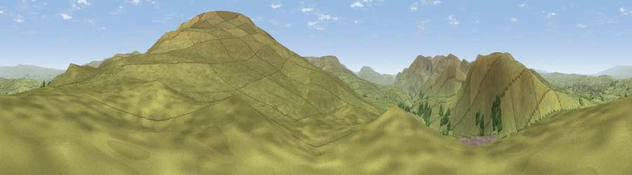

Viewpoint near Ravenstonedale
#11279 in England · top 35% of its area beats it · near RavenstonedaleThe view, rendered

A 360° render of this exact spot computed from the terrain model, tree cover and land cover — summer colours, afternoon light, calibrated against photographs of famous viewpoints. Real trees, hedges and buildings will differ in detail.
The panorama
Grey silhouette: terrain skyline in each direction (720 bearings, Earth curvature and refraction included). Dashed green: skyline with trees (+15 m) and buildings (+8 m) as obstacles. Blue strip: how far the ground is visible on each bearing.
Where the view opens
Wedge length = distance to the farthest visible ground on that bearing (vegetation-aware). Rings at 10, 25 and 50 km.
What fills the view
98% grassland · 2% woodland
Angular shares of the visible panorama (visual magnitude), not map area. Landscape diversity 0.06 (0–1 Shannon).
Key numbers
More beautiful places nearby
The staircase of upgrades: each row has a higher view potential than everything closer. Driving times are estimates from straight-line distance, calibrated against real road routing — check an actual route before setting out.
| Place | Direction | Drive | Score |
|---|---|---|---|
| Viewpoint near Ravenstonedale | NE · 1 km | ~3 min | 67.1 |
| Harter Fell | WNW · 2 km | ~5 min | 69.2 |
| Wild Boar Fell | ESE · 2 km | ~5 min | 75.0 |
| Viewpoint c9983_7527 | ESE · 3 km | ~7 min | 76.3 |
| Viewpoint c10024_7603 | ENE · 7 km | ~14 min | 76.9 |
| Calders | WSW · 8 km | ~16 min | 79.0 |
| Calf Top | SSW · 16 km | ~28 min | 79.8 |
| Crag Hill | SSW · 17 km | ~30 min | 80.0 |
54.39322, -2.40539 · source: screening · position refined by local search. Computed location — check access rights before visiting.